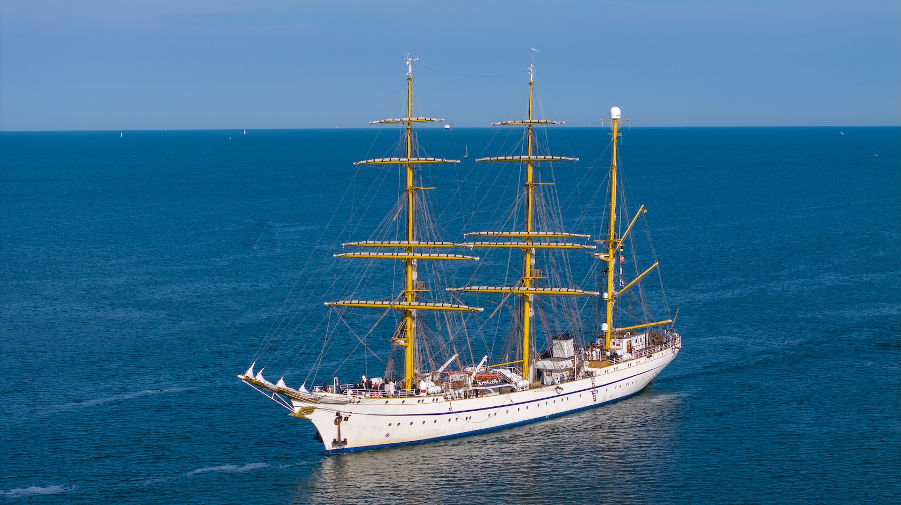

From the Editor
Joni Hammar
Last edited
4.10.2024
Reading time
5 min
Interviewing commander Lehmann
Naval base Hohe Düne in the map
At the Hanse Sail 2024 in Rostock, I was privileged to meet and interview commander of the naval base Hohe Düne, Robert Lehmann. Let us hear more from commander Lehmann himself.Career path
"At first, I enlisted as a petty officer after conscription, so I was based on small ships and working as an U-man for roughly four years. After that I decided to attend officer candidate school and become real navy officer.
My first appointment was as a watch officer of an auxiliary ship. I chose this career path because it was quite a big ship with a small crew and like small crews because there it is more familiar with each other.
Then you have to attend all the postings from third,- second,- and first officer to become a commanding officer. After exam and a test, you get the permission to work as a commanding officer and after mine I was for four years the commanding officer of an auxiliary ship.
After this time, I got to know posting here as a naval base officer because all the naval base officers have a profession in logistics. That is why the link between the auxiliary ship and the commanding officer. In three months from now I will switch the working place to Berlin where I will work in a HQ as an operations officer."

Hohe Düne's commander Robert Lehmann and Joni Hammar at the Hanse Sail press conference
Different Paths
"There is another path where you can start as an officer candidate, but I chose a different path after conscription. I wanted to see what the petty officers are doing and learn a little bit from them before attending officer candidate school because I think it widens your horizon to see and explore a bit more things from a little different perspective. In the normal way you attend officer candidate school after your time in school and then go to the path I described as an officer. "
The ups and downs of the duty
"The ups are working with different people from different professions. Working as a team is always a good idea and I couldn’t work alone. Teamwork gets new challenges passed and does it as a team. I think that is really interesting and that is the point why I chose this path.
The downs are; if you have to send bad news to your crew, your soldiers, soulmates, for example if something is going wrong and everything doesn’t work in a perfect manner. So, you always have to train.
[The downs are] even the hard times when you’re deployed roughly six to seven months away from family, but if you do it as a team, it is a little bit easier to pass these tests."
Holidays
"Normally you get some three to four weeks holiday. Afterwards you go back to the ship and start all over again with training and receiving some new crewmembers and then you go back to another deployment. So normally you have two to four weeks to go back to your family and get some downtime. "
Message to the young considering marines as a career
"I think it’s a good job and a safe job. Especially if you like to search and look for challenges - I think working in a military is always a challenge for you and your family - and if you would like to attend these tests and attend the friendship of comrades. I think the good things are a lot more than the bad things. "
Meaning
"It’s a big part of life especially for my family; my wife and my daughter. For me it’s also a big part of life because I have chosen this path for now 22 years. That’s a lot of me because I am only 42 years old, and I have been working in the military for half of my life.
You spend a lot of time working onboard the ships, on the aircrafts and on different HQs’. It takes a lot of your time for sure."
Groch Fock
Groch Fock is a tall ship of the German Navy, built in 1958. The ship is newly renovated and catches the eye wherever she sails.
"Generations of young navy officers have spent some weeks onboard the ship, so the ship is important for the first steps for an officer candidate to learn a bit about seamanship and comradeship. That’s why I think that the new-old ship will stay as long as the navy."

The newly renovated Groch Fock arriving to Rostock.
The ship’s name has quite an interesting story behind it: she was named after a German Navy’s seaman and author Groch Fock. The man’s actual name was Johann Wilhelm Kinau, whose pseydonym stays better known.He fell in the battle of Skagerrak in 1916 among over 8500 men. He was washed in the shore of Sweden where the locals found his water-sealed diary in his pocket giving away his identity. In his diary they also found the following poem.
Letzter Wunsch / Sterb ich auf der stolzen See, / gönnt Gorch Fock ein Seemansgrab. /
Bringt mich nicht zum Kirchhof hin, / senkt mich tief ins Meer hinab. / Segelmacher näh mich ein. / Steuermann, ein Bibelwort. / Junge, nimm deine Mütze mal ab... / Und dann sinnig über Bord...
Int Morgenrot, int Morgenrot / sleit Michel de Franzosen dot; / tor middagstied, tor middagstied / fegt he de Russen an de Siet; / un in de Obendschummeree / smitt he de Briten in de See!
— Gorch Fock
Ironically, he was buried into the ground next to fallen Brits. His grave still stands in Stensholmen's military graveyard in Sweden.
Read also
Hanse Sail Rostock-